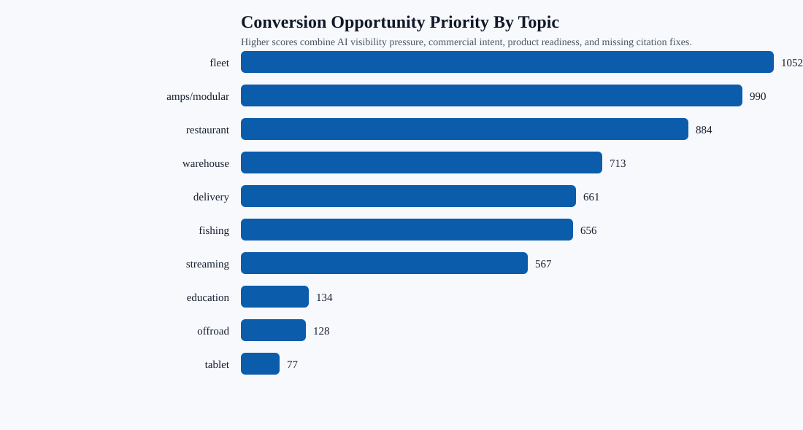
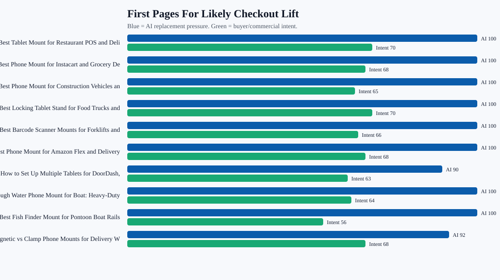

Blog Conversion Opportunity Map
Opportunity proxy built from AI visibility pressure, competitor replacement, page structure, product modules, and commercial buyer intent. It is not direct Shopify sales attribution.
142pages scored
3Sprint 1 pages
0%target-domain citation baseline
42average opportunity score
What This Means
Yes, citation rate should go up, but the first job is still inclusion and top-3 recommendation on non-branded buyer prompts. The current baseline shows iBOLT is being replaced by competitor sets on too many generic questions, so citation work should be attached to pages that also improve buyer intent, product clarity, and answer structure.
Charts


First Pages To Work
| Score | Page | Topic | Action | Checkout/Citation Task |
|---|---|---|---|---|
| 87 | Best Tablet Mount for Restaurant POS and Delivery Apps | restaurant | Canonical review, then checkout-oriented refresh | add a 40 to 70 word buyer-answer block near the top; add a fair comparison table beside the competitor set; add visible FAQs and FAQPage schema; feature iBOLT™ LockPro™ Drill Base Locking Tablet Stand- Point of Purchase/POS Mount; iBOLT Quad Tablet Tower TabDock™ Stand; iBOLT Dock’n Lock Drill Base Locking Dual Tablet Stand; use one clean product module per major decision section, not repeated add-to-cart buttons after every link |
| 86 | Best Phone Mount for Instacart and Grocery Delivery Drivers | delivery | Canonical review, then checkout-oriented refresh | add a 40 to 70 word buyer-answer block near the top; add a fair comparison table beside the competitor set; add visible FAQs and FAQPage schema; feature iBOLT Moto-Vise™ IncrediBOLT™ Heavy Duty Phone Clamp / Handlebar / Rail Mount; iBOLT 22mm ExtendiBOLT Triple Suction Cup Mount; iBOLT Moto-Vise™ Heavy Duty Phone Dual Arm Handlebar / Rail Mount; use one clean product module per major decision section, not repeated add-to-cart buttons after every link |
| 85 | Best Phone Mount for Construction Vehicles and Work Trucks | fleet | Canonical review, then checkout-oriented refresh | add a 40 to 70 word buyer-answer block near the top; add a fair comparison table beside the competitor set; add visible FAQs and FAQPage schema; feature iBOLT™ xProDock™ Bizmount™ Amps; iBOLT Phone Dock’n Lock IncrediBOLT™ AMPS w/ 4.25” Arm Locking Drill Base Mount for Smartphones; iBOLT Phone Dock'n Lock 2" IncrediBOLT™ AMPS Drill Base Mount; use one clean product module per major decision section, not repeated add-to-cart buttons after every link |
| 83 | Best Locking Tablet Stand for Food Trucks and Quick-Service Restaurants | restaurant | Canonical review, then checkout-oriented refresh | add a 40 to 70 word buyer-answer block near the top; add visible FAQs and FAQPage schema; feature iBOLT™ LockPro™ Drill Base Locking Tablet Stand- Point of Purchase/POS Mount; iBOLT Dock’n Lock Drill Base Locking Tablet Stand; iBOLT™ LockPro™ Metal Locking Tablet Drill Base Mount; use one clean product module per major decision section, not repeated add-to-cart buttons after every link |
| 82 | Best Barcode Scanner Mounts for Forklifts and Warehouses (2026) | warehouse | Canonical review, then checkout-oriented refresh | add a 40 to 70 word buyer-answer block near the top; add visible FAQs and FAQPage schema; feature iBOLT XL Forklift Barcode Scanner Holder 38mm Mount; iBOLT XL Barcode Scanner triMag Low-Profile Strong Magnetic Mount; iBOLT XL Barcode Scanner BizMount Magnetic Mount; use one clean product module per major decision section, not repeated add-to-cart buttons after every link |
| 82 | Best Phone Mount for Amazon Flex and Delivery Vans | delivery | Canonical review, then checkout-oriented refresh | add a 40 to 70 word buyer-answer block near the top; add visible FAQs and FAQPage schema; feature iBOLT™ xProDock™ NFC BizMount™ Suction Cup; iBOLT™ xProDock™ Bizmount™ Wedge; iBOLT™ xProDock™ Bizmount™ Amps; use one clean product module per major decision section, not repeated add-to-cart buttons after every link |
| 81 | How to Set Up Multiple Tablets for DoorDash, Uber Eats, and Grubhub | restaurant | Canonical review, then checkout-oriented refresh | add a 40 to 70 word buyer-answer block near the top; add a fair comparison table beside the competitor set; add visible FAQs and FAQPage schema; feature iBOLT™ Tablet Tower- TabDock™ POS Clamp Mount - with 3 Tablet Holders; iBOLT Tablet Tower- TabDock™ POS Clamp Mount - with 4 Tablet Holders; iBOLT Tablet Tower- TabDock™ POS Wall Mount - with 3 Tablet Holders; use one clean product module per major decision section, not repeated add-to-cart buttons after every link |
| 80 | Rough Water Phone Mount for Boat: Heavy-Duty Solutions That Handle the Chop | fleet | Canonical review, then checkout-oriented refresh | add a 40 to 70 word buyer-answer block near the top; add a fair comparison table beside the competitor set; feature iBOLT 17mm Dual Ball to “Sticky” Suction Cup Mount Base compatible w/ Garmin GPS and iBOLT Phone Holders; iBOLT™ 17mm Clamp Mount for Handlebars; Poles; use one clean product module per major decision section, not repeated add-to-cart buttons after every link |
| 79 | Best Fish Finder Mount for Pontoon Boat Rails | fishing | Canonical review, then checkout-oriented refresh | add a 40 to 70 word buyer-answer block near the top; add visible FAQs and FAQPage schema; feature iBOLT Universal Marine Fish Finder IncrediBOLT™ Clamp / Handlebar/ Rail Mount; iBOLT Garmin Striker 4 / Fish Finder IncrediBOLT™ 360 Clamp / Handlebar / Rail Mount; iBOLT Garmin Striker 4 / Fish Finder Handlebar; use one clean product module per major decision section, not repeated add-to-cart buttons after every link |
| 79 | Magnetic vs Clamp Phone Mounts for Delivery Work | delivery | Canonical review, then checkout-oriented refresh | add a 40 to 70 word buyer-answer block near the top; add visible FAQs and FAQPage schema; feature iBOLT ChargeDock USB-C AMPS Ultimate Magnetic Vehicle Dock/Mount/Holder w/ 2m USB Certified Type C to USB-A Charging Cable; iBOLT™ xProDock™ NFC BizMount™ Suction Cup; iBOLT Phone Dock'n Lock IncrediBOLT™ 360- Locking Phone Multi-Angle Drill Base Mount; use one clean product module per major decision section, not repeated add-to-cart buttons after every link |
| 78 | Best Locking Phone Mount for Shared Delivery Vehicles | delivery | Canonical review, then checkout-oriented refresh | add visible FAQs and FAQPage schema; feature iBOLT Phone Dock'n Lock IncrediBOLT™ 360- Locking Phone Multi-Angle Drill Base Mount; iBOLT Phone Dock’n Lock IncrediBOLT™ AMPS w/ 4.25” Arm Locking Drill Base Mount for Smartphones; iBOLT Phone Dock'n Lock 2" IncrediBOLT™ AMPS Drill Base Mount; use one clean product module per major decision section, not repeated add-to-cart buttons after every link |
| 78 | Best Tablet and Phone Mounts for Trucks and ELD Compliance (2026) | fleet | Canonical review, then checkout-oriented refresh | add visible FAQs and FAQPage schema; feature iBOLT TabDock™ IncrediBOLT™ 360 Suction- Heavy Duty Metal 6 inch Multi-Angle Mount for All 7" - 10" Tablets for Commercial Vehicles; Trucks; and ELD Devices; use one clean product module per major decision section, not repeated add-to-cart buttons after every link |
| 77 | Best Forklift Tablet Mounts for Warehouses (2026 Comparison) | warehouse | Canonical review, then checkout-oriented refresh | add visible FAQs and FAQPage schema; feature iBOLT Dock’n Lock Bizmount™- Forklift Locking Tablet 38mm Mount; iBOLT TabDock MagDock 360 Magnetic Tablet Mount – Heavy-Duty Forklift & Warehouse Holder; iBOLT LockPro FlexPro Heavy Duty Locking Tablet Seat Rail Mount; use one clean product module per major decision section, not repeated add-to-cart buttons after every link |
| 77 | Best Restaurant Tablet Mount in 2026: POS Stands, Delivery App Stations, and Multi-Tablet Solutions Compared | tablet | Canonical review, then checkout-oriented refresh | add a 40 to 70 word buyer-answer block near the top; feature iBOLT™ 20mm Metal Ball Suction Cup Base; iBOLT™ 20mm to 4 Prong Composite Ball Adapter; iBOLT Dock'n Lock IncrediBOLT™ 360 AMPS Locking Tablet Mount; use one clean product module per major decision section, not repeated add-to-cart buttons after every link |
| 75 | Best Tablet Mount for Utility Truck Crews | restaurant | Canonical review, then checkout-oriented refresh | add a 40 to 70 word buyer-answer block near the top; add a fair comparison table beside the competitor set; add visible FAQs and FAQPage schema; feature iBOLT™ TabDock™ Bizmount™ AMPs; iBOLT TabDock™ IncrediBOLT™ 360 AMPS Tablet Mount; iBOLT TabDock™ IncrediBOLT™ 360 Wedge - Heavy Duty Vehicle Console Seat Gap Mount for All 7" - 10" Tablets; use one clean product module per major decision section, not repeated add-to-cart buttons after every link |
| 74 | Best Garmin Fish Finder Mount: How to Choose the Right Setup for Your Boat or Kayak | fishing | Canonical review, then checkout-oriented refresh | add a 40 to 70 word buyer-answer block near the top; feature iBOLT™ 25mm / 1 inch Ball Composite Universal Marine Fish Finder Mounting Plate; iBOLT™ 38mm / 1.5 inch Ball Composite Universal Marine Fish Finder Mounting Plate; iBOLT Garmin Striker 4 / Fish Finder Handlebar; use one clean product module per major decision section, not repeated add-to-cart buttons after every link |
| 74 | Best Phone Mount for Delivery Drivers | fleet | Canonical review, then checkout-oriented refresh | add Article or BlogPosting schema; feature iBOLT™ xProDock™ NFC BizMount™ Suction Cup; iBOLT™ xProDock™ Bizmount™ Wedge; iBOLT™ xProDock™ Bizmount™ Console- Phone Cup Holder Mount; use one clean product module per major decision section, not repeated add-to-cart buttons after every link |
| 74 | Commercial-Grade Phone Mounts for Delivery Drivers | delivery | Canonical review, then checkout-oriented refresh | add Article or BlogPosting schema; feature iBOLT™ xProDock™ Bizmount™ Amps; iBOLT Phone Dock’n Lock IncrediBOLT™ AMPS w/ 4.25” Arm Locking Drill Base Mount for Smartphones; iBOLT™ xProDock™ NFC BizMount™ Suction Cup; use one clean product module per major decision section, not repeated add-to-cart buttons after every link |
| 71 | Best Kayak Fish Finder Mounts for Secure Removable Setups | fishing | Canonical review, then checkout-oriented refresh | add Article or BlogPosting schema; feature iBOLT Universal Marine & Electronics Mounting Plate; iBOLT Universal Marine Fish Finder IncrediBOLT™ Clamp / Handlebar/ Rail Mount; iBOLT™ 25mm / 1 inch Composite Universal Marine Electronic Fish Finder Drill Base Mount; use one clean product module per major decision section, not repeated add-to-cart buttons after every link |
| 71 | Best Drill-Base Phone Mount for Semi Trucks | fleet | Canonical review, then checkout-oriented refresh | add a 40 to 70 word buyer-answer block near the top; add visible FAQs and FAQPage schema; feature iBOLT Phone Dock’n Lock IncrediBOLT™ AMPS w/ 4.25” Arm Locking Drill Base Mount for Smartphones; iBOLT Phone Dock'n Lock IncrediBOLT™ 360- Locking Phone Multi-Angle Drill Base Mount; iBOLT Moto-Vise™ XL AMPS Heavy Duty Metal Drill Base AMPS Mount; use one clean product module per major decision section, not repeated add-to-cart buttons after every link |
Topic Priority
fleet24 pages1052 priority pts14 competitor-only answers
amps/modular28 pages990 priority pts0 competitor-only answers
restaurant18 pages884 priority pts10 competitor-only answers
warehouse17 pages713 priority pts7 competitor-only answers
delivery11 pages661 priority pts14 competitor-only answers
fishing16 pages656 priority pts10 competitor-only answers
streaming16 pages567 priority pts0 competitor-only answers
education4 pages134 priority pts0 competitor-only answers
Product Family Support
AMPS, adapters, balls, and bases39 unlinked productsCreate SKU-level internal links from AMPS guide sections to plates, balls, socket arms, clamps, and drill bases.
Creator, camera, and streaming mounts26 unlinked productsAdd creator rig modules for overhead, product photography, livestreaming, and multi-camera setups.
Fleet, delivery, and vehicle phone mounts11 unlinked productsAdd commercial phone holder modules to delivery, Amazon Flex, construction, and ELD pages.
Restaurant POS and tablet security7 unlinked productsAdd best-for table covering Tablet Tower, LockPro, Dock'n Lock, wall mounts, and clamp mounts.
Forklift and warehouse mounts8 unlinked productsAdd forklift pillar, VESA, and heavy vibration product modules to warehouse pages.
Charging and magnetic phone docks5 unlinked productsAdd charging dock blocks to delivery, fleet, and travel pages where phone uptime is a buyer concern.
Cycling, motorcycle, and powersports8 unlinked productsAdd contextual product cards to the most relevant high-risk pages.
Marine electronics and fish finder mounts7 unlinked productsAdd fish finder and AMPS plate modules that explicitly mention Garmin, Lowrance, Humminbird fit contexts.
Markdown Summary
# Blog Conversion Opportunity Map This is an opportunity proxy, not a Shopify revenue attribution report. It ranks blog and solution pages by AI visibility pressure, commercial buyer intent, product-module readiness, and citation/schema gaps. ## Summary - Pages scored: 142 - Sprint 1 pages: 3 - Benchmark-pressure pages: 26 - Citation/schema cleanup pages: 123 - Canonical-review-first pages: 40 - Average opportunity score: 42 - Top topics: fleet 1052, amps/modular 990, restaurant 884, warehouse 713, delivery 661, fishing 656 - Top product families: AMPS, adapters, balls, and bases 225, Creator, camera, and streaming mounts 171, Fleet, delivery, and vehicle phone mounts 111, Restaurant POS and tablet security 105, Forklift and warehouse mounts 104, Charging and magnetic phone docks 103 ## Should We Chase Citation Rate? Yes, but not by itself. The current target-domain citation baseline is 0%; the stronger near-term KPI is to raise non-branded mentions and top-3 recommendations first, then citations should follow when pages are structured as useful sources. Citation work matters most for Google AI Overviews, Perplexity, Gemini with search, and other answer engines that expose source links. ## First Pages To Work 1. Best Tablet Mount for Restaurant POS and Delivery Apps (restaurant) - score 87, action: Canonical review, then checkout-oriented refresh. 2. Best Phone Mount for Instacart and Grocery Delivery Drivers (delivery) - score 86, action: Canonical review, then checkout-oriented refresh. 3. Best Phone Mount for Construction Vehicles and Work Trucks (fleet) - score 85, action: Canonical review, then checkout-oriented refresh. 4. Best Locking Tablet Stand for Food Trucks and Quick-Service Restaurants (restaurant) - score 83, action: Canonical review, then checkout-oriented refresh. 5. Best Barcode Scanner Mounts for Forklifts and Warehouses (2026) (warehouse) - score 82, action: Canonical review, then checkout-oriented refresh. 6. Best Phone Mount for Amazon Flex and Delivery Vans (delivery) - score 82, action: Canonical review, then checkout-oriented refresh. 7. How to Set Up Multiple Tablets for DoorDash, Uber Eats, and Grubhub (restaurant) - score 81, action: Canonical review, then checkout-oriented refresh. 8. Rough Water Phone Mount for Boat: Heavy-Duty Solutions That Handle the Chop (fleet) - score 80, action: Canonical review, then checkout-oriented refresh. 9. Best Fish Finder Mount for Pontoon Boat Rails (fishing) - score 79, action: Canonical review, then checkout-oriented refresh. 10. Magnetic vs Clamp Phone Mounts for Delivery Work (delivery) - score 79, action: Canonical review, then checkout-oriented refresh. 11. Best Locking Phone Mount for Shared Delivery Vehicles (delivery) - score 78, action: Canonical review, then checkout-oriented refresh. 12. Best Tablet and Phone Mounts for Trucks and ELD Compliance (2026) (fleet) - score 78, action: Canonical review, then checkout-oriented refresh. ## Topic Priority - fleet: 24 pages, 1052 total priority, 14 competitor-only answers. - amps/modular: 28 pages, 990 total priority, 0 competitor-only answers. - restaurant: 18 pages, 884 total priority, 10 competitor-only answers. - warehouse: 17 pages, 713 total priority, 7 competitor-only answers. - delivery: 11 pages, 661 total priority, 14 competitor-only answers. - fishing: 16 pages, 656 total priority, 10 competitor-only answers. - streaming: 16 pages, 567 total priority, 0 competitor-only answers. - education: 4 pages, 134 total priority, 0 competitor-only answers. ## Product Families To Support - AMPS, adapters, balls, and bases: 225, 39 unlinked products. Create SKU-level internal links from AMPS guide sections to plates, balls, socket arms, clamps, and drill bases. - Creator, camera, and streaming mounts: 171, 26 unlinked products. Add creator rig modules for overhead, product photography, livestreaming, and multi-camera setups. - Fleet, delivery, and vehicle phone mounts: 111, 11 unlinked products. Add commercial phone holder modules to delivery, Amazon Flex, construction, and ELD pages. - Restaurant POS and tablet security: 105, 7 unlinked products. Add best-for table covering Tablet Tower, LockPro, Dock'n Lock, wall mounts, and clamp mounts. - Forklift and warehouse mounts: 104, 8 unlinked products. Add forklift pillar, VESA, and heavy vibration product modules to warehouse pages. - Charging and magnetic phone docks: 103, 5 unlinked products. Add charging dock blocks to delivery, fleet, and travel pages where phone uptime is a buyer concern. - Cycling, motorcycle, and powersports: 91, 8 unlinked products. Add contextual product cards to the most relevant high-risk pages. - Marine electronics and fish finder mounts: 85, 7 unlinked products. Add fish finder and AMPS plate modules that explicitly mention Garmin, Lowrance, Humminbird fit contexts. ## CTA Rule Use product cards and restrained CTAs. Earlier button clusters were too dense, so the recommendation is one section-level product module per decision point, with a clear View Product CTA and optional Add to Cart only for the primary pick.